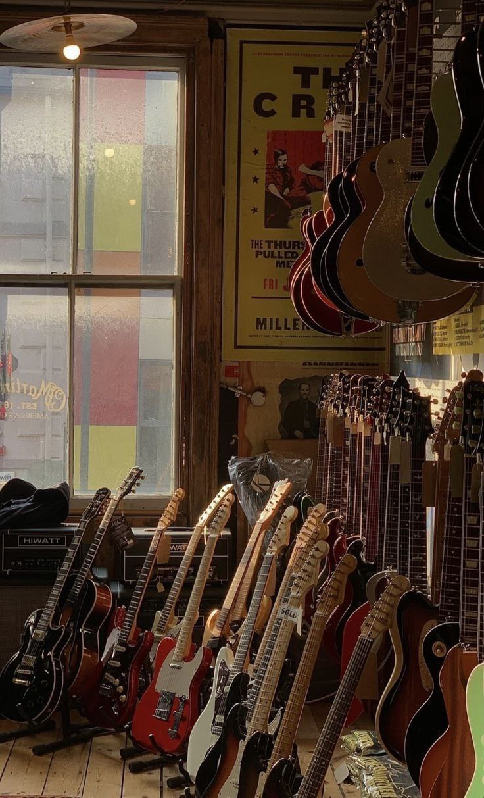
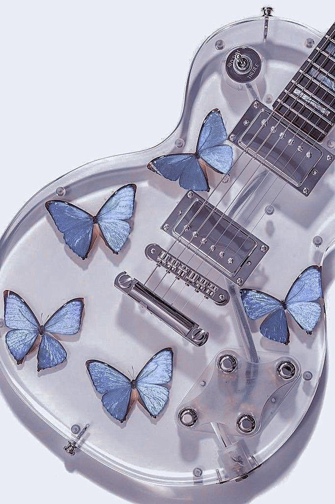

Compared to wind, reed, percussion and bowed instruments which can play only one or two notes at a time, the guitar can play chords and melodically complex and interesting music.
GUITAR
No other instrument mimics the capacity of the human voice to express emotion like the guitar


The tone of a guitar is its voice, and just like human voices, every guitar has a unique tone that sets it apart. The tone of a guitar is not just about the sound it produces, but also about how it responds to the player's touch.